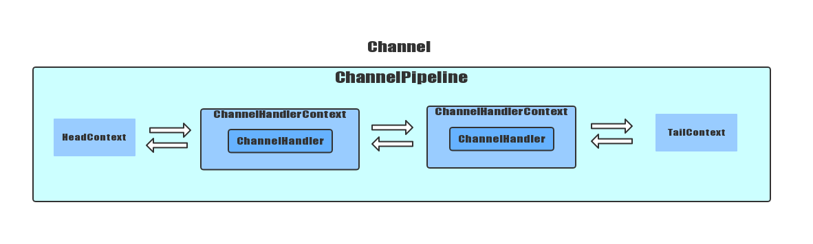

Netty中ChannelPipeline实际上类似与一条数据管道，负责传递Channel中读取的消息，它本质上是基于责任链模式的设计与实现，无论是IO事件的拦截器，还是用户自定义的ChannelHandler业务逻辑都做为一个个节点被添加到任务链上。
ChannelPipeline中作为Netty中的数据管道，作用就是通过控制与联通不同的ChannelHandler，传递Channel中的消息。每一个Channel，都对应一个ChannelPipeline作为ChannelHandler的容器，而ChannelHandlerContext则把ChannelHandler的封装成每个节点，以双向链表方式在容器中存在；我们可以通过下图简单看下它们之间的关系。

使用过Netty的朋友们都清楚，ChannelHandler就是作为拦截器和业务处理逻辑的存在，它会处理Channel中读写的消息；
首先看下ChannelHandler接口的定义
public interface ChannelHandler {
//当ChannelHandler添加到Pipeline中时调用
void handlerAdded(ChannelHandlerContext ctx) throws Exception;
//当ChannelHandler在Pipeline中被移除时调用
void handlerRemoved(ChannelHandlerContext ctx) throws Exception;
//在运行过程中 发生异常时调用
@Deprecated
void exceptionCaught(ChannelHandlerContext ctx, Throwable cause) throws Exception;
@Inherited
@Documented
@Target(ElementType.TYPE)
@Retention(RetentionPolicy.RUNTIME)
@interface Sharable {
// no value
}
}ChannelHandler在处理或拦截IO操作时，分为出站和入站两个方向，对应channelde读写两个操作,所以Netty中又从ChannelHandler中派生出入站ChannelInboundHandler和出站ChannelOutboundHandler两个接口
ChannelInboundHandler处理入站数据以及各种状态的变化，下面列出了ChannelInboundHandler中数据被接收或者Channel状态发生变化时被调用的方法，这些方法和Channel的生命周期密切相关
public interface ChannelInboundHandler extends ChannelHandler {
//当Channel注册对应的EventLoop并且能够处理I/O操作时被调用
void channelRegistered(ChannelHandlerContext ctx) throws Exception;
//当Channel从它对应的EventLoop上注销，并且无法处理I/O操作时被调用
void channelUnregistered(ChannelHandlerContext ctx) throws Exception;
//当Channel已经连接时被调用
void channelActive(ChannelHandlerContext ctx) throws Exception;
//当Channel为非活动状态，也就是断开时被调用
void channelInactive(ChannelHandlerContext ctx) throws Exception;
//当从Channel读取数据时被调用
void channelRead(ChannelHandlerContext ctx, Object msg) throws Exception;
//当Channel的上一个读数据完成后被调用
void channelReadComplete(ChannelHandlerContext ctx) throws Exception;
//当调用fireUserEventTriggered方法时被调用
void userEventTriggered(ChannelHandlerContext ctx, Object evt) throws Exception;
//当Channel的可写状态发生改变时被调用。用户可以确保写操作不会完成太快
void channelWritabilityChanged(ChannelHandlerContext ctx) throws Exception;
@Override
@SuppressWarnings("deprecation")
//入站操作发生异常时调用
void exceptionCaught(ChannelHandlerContext ctx, Throwable cause) throws Exception;
}ChannelOutboundHandler处理出站操作和数据
public interface ChannelOutboundHandler extends ChannelHandler {
//当请求将Channel绑定到本地地址时被调用
void bind(ChannelHandlerContext ctx, SocketAddress localAddress, ChannelPromise promise) throws Exception;
//当请求将Channel连接到远程节点时被调用
void connect(
ChannelHandlerContext ctx, SocketAddress remoteAddress,
SocketAddress localAddress, ChannelPromise promise) throws Exception;
//当请求将Channel从远程节点断开时被调用
void disconnect(ChannelHandlerContext ctx, ChannelPromise promise) throws Exception;
//当请求关闭Channel时被调用
void close(ChannelHandlerContext ctx, ChannelPromise promise) throws Exception;
//当请求从对应的EventLoop中注销时被调用
void deregister(ChannelHandlerContext ctx, ChannelPromise promise) throws Exception;
//当请求从Channel读取数据时被调用
void read(ChannelHandlerContext ctx) throws Exception;
//当请求通过Channel将数据写到远程节点时被调用
void write(ChannelHandlerContext ctx, Object msg, ChannelPromise promise) throws Exception;
//当请求通过Channel将入队列数据冲刷到远程节点时被调用
void flush(ChannelHandlerContext ctx) throws Exception;
}ChannelHandlerContext可以说是ChannelPipeline的核心，它代表了ChannelHandler和ChannelPipeline之间的关联，我们首先要知道一个ChannelPipeline内部会维护一个双向链表，每当一个ChannelHandler被添加到ChannelPipeline中时，它都会被包装成为一个ChannelHandlerContext，组成链表的各个节点。
我们看下ChannelHandlerContext接口中定义的API接口
public interface ChannelHandlerContext extends AttributeMap, ChannelInboundInvoker, ChannelOutboundInvoker {
/**
* Return the {@link Channel} which is bound to the {@link ChannelHandlerContext}.
*/
//每个ChannelHandlerContext都会对一个Channel
Channel channel();
/**
* Returns the {@link EventExecutor} which is used to execute an arbitrary task.
*/
//返回用于执行的EventExecutor任务
EventExecutor executor();
/**
* The unique name of the {@link ChannelHandlerContext}.The name was used when then {@link ChannelHandler}
* was added to the {@link ChannelPipeline}. This name can also be used to access the registered
* {@link ChannelHandler} from the {@link ChannelPipeline}.
*/
//返回定义的name名称
String name();
/**
* The {@link ChannelHandler} that is bound this {@link ChannelHandlerContext}.
*/
ChannelHandler handler();
/**
* Return {@code true} if the {@link ChannelHandler} which belongs to this context was removed
* from the {@link ChannelPipeline}. Note that this method is only meant to be called from with in the
* {@link EventLoop}.
*/
//如果绑定到ChannelPipeline的ChannelHandler被删除，返回true
boolean isRemoved();
//触发下一个ChannelInboundHandler中fireChannelRegistered方法
@Override
ChannelHandlerContext fireChannelRegistered();
//触发下一个ChannelInboundHandler中fireChannelUnregistered方法
@Override
ChannelHandlerContext fireChannelUnregistered();
//触发下一个ChannelInboundHandler中fireChannelActive方法
@Override
ChannelHandlerContext fireChannelActive();
//触发下一个ChannelInboundHandler中fireChannelInactive方法
@Override
ChannelHandlerContext fireChannelInactive();
//触发下一个ChannelInboundHandler中fireExceptionCaught方法
@Override
ChannelHandlerContext fireExceptionCaught(Throwable cause);
//触发下一个ChannelInboundHandler中fireUserEventTriggered方法
@Override
ChannelHandlerContext fireUserEventTriggered(Object evt);
//触发下一个ChannelInboundHandler中fireChannelRead方法
@Override
ChannelHandlerContext fireChannelRead(Object msg);
//触发下一个ChannelInboundHandler中fireChannelReadComplete方法
@Override
ChannelHandlerContext fireChannelReadComplete();
//触发下一个ChannelInboundHandler中fireChannelWritabilityChanged方法
@Override
ChannelHandlerContext fireChannelWritabilityChanged();
//触发下一个ChannelInboundHandler中channelRead方法，如果是最后一个ChannelInboundHandler，则读取完成后触发channelReadComplete
@Override
ChannelHandlerContext read();
//触发下一个ChannelOutboundHandler中flush方法
@Override
ChannelHandlerContext flush();
/**
* Return the assigned {@link ChannelPipeline}
*/
ChannelPipeline pipeline();
/**
* Return the assigned {@link ByteBufAllocator} which will be used to allocate {@link ByteBuf}s.
*/
//返回绑定该channel 的 ByteBufAllocator
ByteBufAllocator alloc();
/**
* @deprecated Use {@link Channel#attr(AttributeKey)}
*/
@Deprecated
@Override
//返回Attribute
<T> Attribute<T> attr(AttributeKey<T> key);
/**
* @deprecated Use {@link Channel#hasAttr(AttributeKey)}
*/
@Deprecated
@Override
//是否包含指定的AttributeKey
<T> boolean hasAttr(AttributeKey<T> key);
} 在AbstractChannel的构造函数中我们可以看到对ChannelPipeline的初始化
protected AbstractChannel(Channel parent) {
this.parent = parent;
id = newId();
unsafe = newUnsafe();
pipeline = newChannelPipeline();//初始化ChannelPipeline
}看下newChannelPipeline()内部的实现
protected DefaultChannelPipeline newChannelPipeline() {
return new DefaultChannelPipeline(this);
}在这里创建了一个DefaultChannelPipeline 对象，并传入Channel对象。DefaultChannelPipeline 实现了ChannelPipeline的接口
进入DefaultChannelPipeline类内部，看下其具体构造
protected DefaultChannelPipeline(Channel channel) {
this.channel = ObjectUtil.checkNotNull(channel, "channel");
succeededFuture = new SucceededChannelFuture(channel, null);
voidPromise = new VoidChannelPromise(channel, true);
tail = new TailContext(this);//定义一个头部节点
head = new HeadContext(this);//定义一个尾部节点
//连接头尾节点，构成双向链表
head.next = tail;
tail.prev = head;
}在这里我们可以看到DefaultChannelPipeline内部通过声明头尾两个Context节点对象，构建了一个双向链表结构我们；其实这里的TailContext与HeadContext都是ChannelHandlerContext接口的具体实现;
通过上面的内容，我们可以看出ChannelPipeline就是一个用于拦截Channel入站和出站事件的ChannelHandler实例链，而ChannelHandlerContext就是这个实例链上的节点，每一个新创建的Channel都会被分配一个新的ChannelPipeline。这篇文章我们对ChannelPipeline的构造和设计进行了大概的总结，其中如有不足与不正确的地方还望指出与海涵。后面我会对ChannelPipeline中ChannelHandler的添加、删除等具体操作与事件如何在管道中流通传递进行具体的分析。
关注微信公众号，查看更多技术文章。